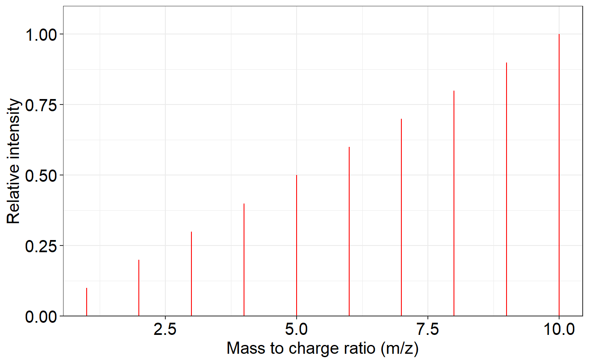
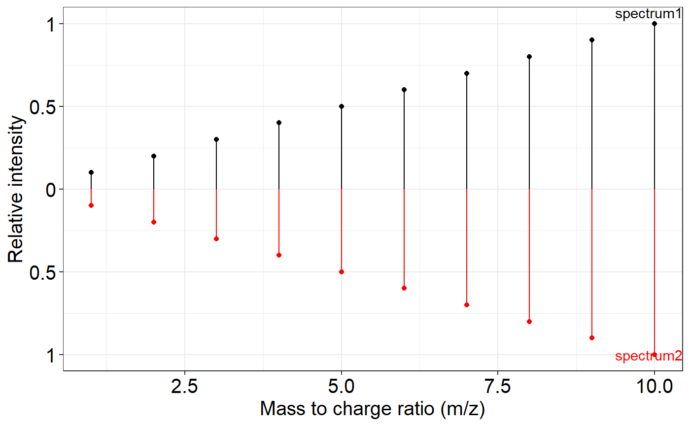
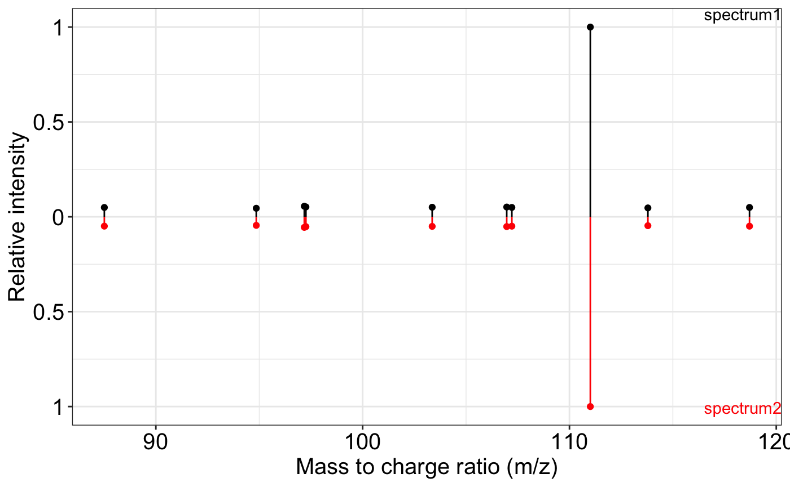
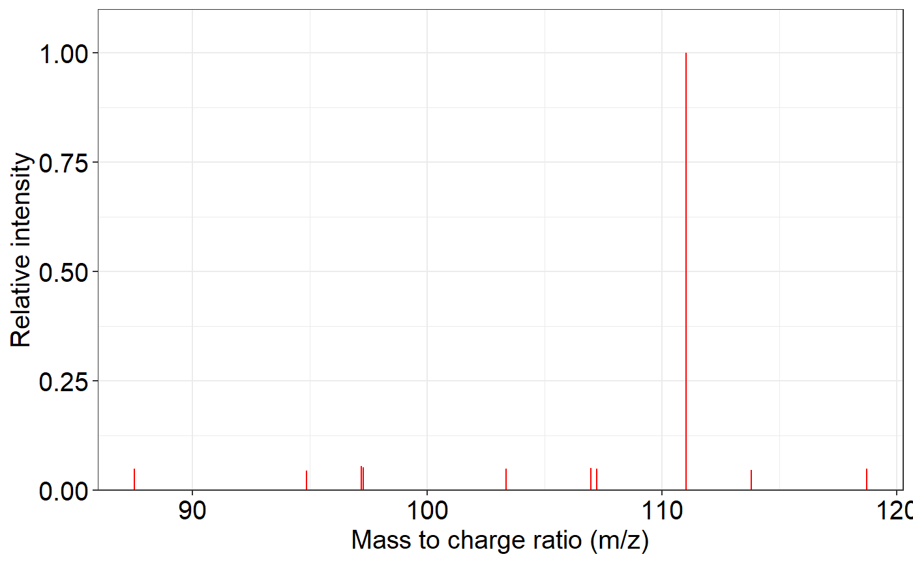

vignettes/masstools_introduction.Rmd
masstools_introduction.Rmdmasstools is a comprehensive R package that provides a
collection of useful tools for mass spectrometry data processing and
analysis. As an integral component of the tidymass
ecosystem, masstools serves as a foundational package that
offers essential utilities for metabolomics and mass spectrometry
workflows. The package encompasses a wide range of functionality
designed to support various aspects of mass spectrometry data analysis,
including tandem mass spectrometry (MS2) matching, dot product
calculations, and other fundamental operations. masstools provides
researchers and analysts with reliable, well-tested tools for handling
complex mass spectrometry datasets.
The package includes specialized functions for: - Spectral similarity calculations and MS2 matching - Chemical formula processing - Mass spectrometry data file reading and manipulation - Data visualization tools for mass spectra
Developed primarily by Xiaotao Shen and contributors,
masstools is designed to work seamlessly with modern R
workflows and integrates well with other packages in the
tidymass ecosystem, making it an essential tool for anyone
working with mass spectrometry data in R.And masstools is a
part of tidymass
project.
The inclusion of masstools in Bioconductor is motivated by the need for a lightweight, dependency-conscious utility package that addresses common tasks in metabolomics and untargeted MS pipelines. It helps bridge gaps between core infrastructure packages (e.g., Spectra, MSnbase) and applied workflows by providing optimized, reusable building blocks for data parsing, similarity computation, and identifier conversion.
Spectra (core MS infrastructure):
Spectra provides a formal class system for raw and
processed spectra. masstools does not define new S4
classes, but instead offers functional utilities that can be applied
directly to vectors, data frames, or lists of spectra—often after data
is read via Spectra or MSnbase. For example,
similarity metrics (get_dp()) or plotting
(ms2_plot()) can complement Spectra workflows
in downstream annotation tasks.
MSCoreUtils: This package offers generic low-level
tools for MS data manipulation. masstools extends beyond
these core operations by offering metabolomics-specific functions such
as formula validation, adduct summation, and spectral similarity
tailored to compound annotation tasks.
ProtGenerics: Used internally to align with
Bioconductor’s S4 generic interface, though masstools
primarily operates using S3 methods and functional programming
paradigms. Future compatibility with Bioconductor S4 classes is planned
and partially supported through its flexible function design.
MSnbase: While not directly dependent on
MSnbase, users often pair MSnbase's data
structure and raw data access with masstools utilities for
data exploration and spectral annotation, e.g., using MSnExp with
get_spectra_match_score() or
ms2_plot().
[]
You can use masstools to do the chemical formula
operation.
The sum_formula() function is designed to calculate the
resulting chemical formula after applying a specific adduct
transformation to a given base formula. This is particularly useful in
mass spectrometry and metabolomics, where observed m/z values often
correspond to the base compound plus/minus an adduct (e.g.,
[M+H]+, [M+Na]+, [M-H2O+H]+).
sum_formula(formula = "C9H11NO2", adduct = "M+H")
#> [1] "C9H12NO2"
sum_formula(formula = "C9H11NO2", adduct = "M+")
#> [1] "C9H11NO2"
sum_formula(formula = "C9H11NO2", adduct = "M+CH3COOH")
#> [1] "C11H15NO4"
sum_formula(formula = "C9H11", adduct = "M-H20")
#> [1] NAThe split_formula() function is a utility designed to
parse a chemical formula string into a structured tabular
form—specifically a data.frame containing the elemental
composition (symbols and their counts). This function is a foundational
step for any downstream chemical formula manipulation, such as computing
molecular weights, summing with adducts (see
sum_formula()), or formula validation.
split_formula(formula = "C9H11NO2")
#> element number
#> 2 C 9
#> 3 H 11
#> 4 N 1
#> 5 O 2
split_formula(formula = "C2H4")
#> element number
#> 2 C 2
#> 3 H 4This section demonstrates a typical workflow for comparing and scoring similarity between two MS2 spectra, such as those from an experimental run and a reference library. It involves preprocessing, visualization, peak matching, and similarity scoring.
###remove the noisy peaks in one ms2 spectrum
exp.spectrum <- data.frame(mz = c(1:10, 1.0001),
intensity = c(1:10, 0.1))
###The `ms2_plot()` function enables side-by-side comparison of two MS2 spectra using either static or interactive plots. It allows control over visual styling (colors, font sizes) and comparison parameters (e.g., ppm tolerance).
ms2_plot(exp.spectrum)
###The `removeNoise()` function identifies and removes redundant or spurious peaks based on a ppm-based closeness criterion. For overlapping m/z values, it retains the more intense peak.
exp.spectrum2 = removeNoise(exp.spectrum)
ms2_plot(exp.spectrum, exp.spectrum2)
###match two spectra according to mz
exp.spectrum <- data.frame(mz = 1:10, intensity = 1:10)
lib.spectrum <- data.frame(mz = 1:10, intensity = 1:10)
###The `ms2Match()` function aligns peaks between experimental and library MS2 spectra based on m/z proximity within a ppm tolerance.
ms2Match(exp.spectrum, lib.spectrum)
#> Lib.index Exp.index Lib.mz Lib.intensity Exp.mz Exp.intensity
#> 1 1 1 1 1 1 1
#> 2 2 2 2 2 2 2
#> 3 3 3 3 3 3 3
#> 4 4 4 4 4 4 4
#> 5 5 5 5 5 5 5
#> 6 6 6 6 6 6 6
#> 7 7 7 7 7 7 7
#> 8 8 8 8 8 8 8
#> 9 9 9 9 9 9 9
#> 10 10 10 10 10 10 10
## calculate the dot product of two matched intensity
## The `getDP()` function calculates a weighted dot product between two intensity vectors. This is a common metric for comparing shape similarity between two spectra.
getDP(exp.int = 1:10, lib.int = 1:10)
#> [1] 1
getDP(exp.int = 10:1, lib.int = 1:10)
#> [1] 0.379698
###matched two spectra and calculate dot product
exp.spectrum <- data.frame(mz = 1:10, intensity = 1:10)
lib.spectrum <- data.frame(mz = 1:10, intensity = 1:10)
## This function combines multiple aspects of similarity into a composite similarity score between an experimental and a library MS2 spectrum.
getSpectraMatchScore(exp.spectrum, lib.spectrum)
#> [1] 1MS2 plot and MS2 matching plot. The ms2_plot() function
is designed to visualize one or two MS2 spectra, enabling side-by-side
comparison. This is useful in spectral library matching, experimental
result inspection, or quality control.
Here, we simulate two identical MS2 spectra and demonstrate how the function can be used for both single-spectrum display and comparative visualization.
spectrum1 <- data.frame(
mz = c(
87.50874,
94.85532,
97.17808,
97.25629,
103.36186,
106.96647,
107.21461,
111.00887,
113.79269,
118.70564
),
intensity =
c(
8356.306,
7654.128,
9456.207,
8837.188,
8560.228,
8746.359,
8379.361,
169741.797,
7953.080,
8378.066
)
)
spectrum2 <- spectrum1
ms2_plot(spectrum1, spectrum2)
# ms2_plot(spectrum1, spectrum2, interactive_plot = TRUE)
ms2_plot(spectrum1)
# ms2_plot(spectrum1, interactive_plot = TRUE)We can match two feature tables according to mz and retention time. In LC-MS-based metabolomics or proteomics, features (i.e., detected signals) are typically characterized by mass-to-charge ratio (m/z) and retention time (RT). Accurate matching of features between samples, instruments, or datasets is a fundamental requirement for annotation, alignment, and statistical comparison.
The mz_rt_match() function performs feature-wise
matching between two datasets (data1 and
data2) using both m/z and RT criteria, allowing users to
define mass tolerance in ppm and RT tolerance either in absolute units
or relative percentage.
data1 <- data.frame(mz = 1:10, rt = 1:10)
data2 <- data.frame(mz = 1:10, rt = 1:10)
mz_rt_match(data1, data2, mz.tol = 10)
#> Index1 Index2 mz1 mz2 mz error rt1 rt2 rt error
#> 1 1 1 1 1 0 1 1 0
#> 2 2 2 2 2 0 2 2 0
#> 3 3 3 3 3 0 3 3 0
#> 4 4 4 4 4 0 4 4 0
#> 5 5 5 5 5 0 5 5 0
#> 6 6 6 6 6 0 6 6 0
#> 7 7 7 7 7 0 7 7 0
#> 8 8 8 8 8 0 8 8 0
#> 9 9 9 9 9 0 9 9 0
#> 10 10 10 10 10 0 10 10 0Two web tools are used for compound compound convert.
cts.fiehnlab is http://cts.fiehnlab.ucdavis.edu/service/convert. It support a lot of databases.
We can use the trans_id_database() to get the databases
that cts.fiehnlab. Caution:
trans_id_database function temporarily can not be used.
database_name <- trans_id_database(server = "cts.fiehnlab")
head(database_name$From$From)
head(database_name$To$From)We can see that it support a lot of (> 200) databases.
We can try the most common convert, from KEGG to HMDB.
The trans_ID() function facilitates the conversion of
metabolite or chemical identifiers between widely used databases such as
KEGG, PubChem, HMDB, ChEBI, and others. This is a critical task in
metabolomics and cheminformatics, especially when integrating datasets
from different sources, performing compound annotation, or preparing
data for submission to external tools and repositories.
trans_ID(
query = "C00001",
from = "KEGG",
to = "Human Metabolome Database",
top = 1,
server = "cts.fiehnlab"
)
#> KEGG Human Metabolome Database
#> 1 C00001 NANow, trans_ID doesn’t support verctor query. So you can
use the purrr::map() to achive this.
This is from https://www.chemspider.com/InChI.asmx.
We can use the trans_id_database() to get the databases
that chemspider
database_name2 <- trans_id_database(server = "chemspider")
database_name2$From
database_name2$ToThis is very useful if you want to get the inchikey, inchi or smiles for one compound. But this web only support “ChemSpider ID” (csid), so we need use cts.fiehnlab convert to csid first.
trans_ID(
query = "C00001",
from = "KEGG",
to = "ChemSpider",
top = 1,
server = "cts.fiehnlab"
)
#> KEGG ChemSpider
#> 1 C00001 NA
trans_ID(
query = "140526",
from = "csid",
to = "mol",
top = 1,
server = "chemspider"
)
#> [1] NARefer this publication: https://jcheminf.biomedcentral.com/articles/10.1186/s13321-016-0174-y
The get_compound_class() function provides a convenient
interface to query the ClassyFire database (https://classyfire.wishartlab.com), retrieving the
chemical taxonomy and classification of a compound given its InChIKey.
ClassyFire organizes chemical compounds into a structured taxonomy
(Kingdom → Superclass → Class → Subclass…), and is widely used in
cheminformatics, metabolomics, and compound annotation.
result <-
get_compound_class(
inchikey = "QZDWODWEESGPLC-UHFFFAOYSA-N",
server = "http://classyfire.wishartlab.com/entities/",
sleep = 5
)
result
#> Kingdom : Organic compounds
#> └─Superclass : Organoheterocyclic compounds
#> └─Class : Pyridines and derivativesIn many data processing workflows—especially during column naming, feature annotation, or ID assignment—duplicate names can lead to ambiguity, overwriting, or unexpected behavior in downstream analyses.
The name_duplicated() function provides a simple and
robust mechanism to disambiguate repeated values in a character vector
by appending sequential suffixes (e.g., _1,
_2, …).
name_duplicated(c("a", "a", "b", "c", "a", "b", "c", "a"))
#> [1] "a_1" "a_2" "b_1" "c_1" "a_3" "b_2" "c_2" "a_4"
name_duplicated(c(rep(1, 5), 2))
#> [1] "1_1" "1_2" "1_3" "1_4" "1_5" "2"
name_duplicated(1:5)
#> [1] 1 2 3 4 5Windows
Copy the file path in File explorer in
Windows.
Then type in R:
setwd_win()Then paste the file path and type Enter.
The get_os() function is a lightweight utility that
determines the operating system (OS) on which the current R session is
running. This is often necessary when designing scripts or packages that
involve platform-dependent behavior.
get_os()
#> sysname
#> "windows"masstools
Output logo and version of masstools.
masstools_logo()
#> _______ _
#> |__ __| | |
#> _ __ ___ __ _ ___ ___| | ___ ___ | |___
#> | '_ ` _ \ / _` / __/ __| |/ _ \ / _ \| / __|
#> | | | | | | (_| \__ \__ \ | (_) | (_) | \__ \
#> |_| |_| |_|\__,_|___/___/_|\___/ \___/|_|___/
#>
#> masstools
The masstools_conflicts() function is a diagnostic tool
designed to identify function name conflicts between functions exported
by the masstools package and functions from other packages
currently attached in the R session.
Function name conflicts are common in the R ecosystem due to the way
the search path is managed. When multiple packages export functions with
the same name (e.g., filter() from both stats
and dplyr), the one most recently attached typically
“masks” the others. This can lead to confusing or unintended
behavior.
masstools_conflicts()
#> ── Conflicts ────────────────────────────────────────── masstools_conflicts() ──
#> ✖ methods::body<-() masks base::body<-()
#> ✖ tidyr::extract() masks magrittr::extract()
#> ✖ dplyr::filter() masks stats::filter()
#> ✖ methods::kronecker() masks base::kronecker()
#> ✖ dplyr::lag() masks stats::lag()
#> ✖ purrr::set_names() masks magrittr::set_names()masstools
The masstools_packages() function provides a
programmatic way to retrieve the list of R packages imported by
masstools, as declared in its DESCRIPTION file
under the Imports field. This utility is particularly
helpful in diagnostic functions, dependency management, and package
introspection.
masstools_packages()
#> [1] "dplyr" "jsonlite" "remotes" "magrittr" "tibble"
#> [6] "tidyr" "stringr" "methods" "crayon" "cli"
#> [11] "purrr" "pbapply" "httr" "rvest" "xml2"
#> [16] "stats" "utils" "MSnbase" "ProtGenerics" "lifecycle"
#> [21] "ggplot2" "masstools"
sessionInfo()
#> R version 4.4.3 (2025-02-28 ucrt)
#> Platform: x86_64-w64-mingw32/x64
#> Running under: Windows 11 x64 (build 26100)
#>
#> Matrix products: default
#>
#>
#> locale:
#> [1] LC_COLLATE=Chinese (Simplified)_China.utf8
#> [2] LC_CTYPE=Chinese (Simplified)_China.utf8
#> [3] LC_MONETARY=Chinese (Simplified)_China.utf8
#> [4] LC_NUMERIC=C
#> [5] LC_TIME=Chinese (Simplified)_China.utf8
#>
#> time zone: Asia/Shanghai
#> tzcode source: internal
#>
#> attached base packages:
#> [1] stats graphics grDevices utils datasets methods base
#>
#> other attached packages:
#> [1] lubridate_1.9.4 forcats_1.0.0 stringr_1.5.1 purrr_1.0.4
#> [5] readr_2.1.5 tidyr_1.3.1 tibble_3.3.0 ggplot2_3.5.2
#> [9] tidyverse_2.0.0 dplyr_1.1.4 magrittr_2.0.3 masstools_0.99.0
#>
#> loaded via a namespace (and not attached):
#> [1] pbapply_1.7-2 remotes_2.5.0
#> [3] rlang_1.1.6 clue_0.3-66
#> [5] matrixStats_1.5.0 compiler_4.4.3
#> [7] vctrs_0.6.5 reshape2_1.4.4
#> [9] rvest_1.0.4 ProtGenerics_1.38.0
#> [11] pkgconfig_2.0.3 crayon_1.5.3
#> [13] fastmap_1.2.0 XVector_0.46.0
#> [15] labeling_0.4.3 rmarkdown_2.29
#> [17] tzdb_0.5.0 UCSC.utils_1.2.0
#> [19] preprocessCore_1.68.0 xfun_0.52
#> [21] MultiAssayExperiment_1.32.0 zlibbioc_1.52.0
#> [23] cachem_1.1.0 GenomeInfoDb_1.42.3
#> [25] jsonlite_2.0.0 DelayedArray_0.32.0
#> [27] BiocParallel_1.36.0 parallel_4.4.3
#> [29] cluster_2.1.8 R6_2.6.1
#> [31] bslib_0.9.0 stringi_1.8.7
#> [33] RColorBrewer_1.1-3 limma_3.62.2
#> [35] GenomicRanges_1.58.0 jquerylib_0.1.4
#> [37] Rcpp_1.1.0 SummarizedExperiment_1.36.0
#> [39] iterators_1.0.14 knitr_1.50
#> [41] IRanges_2.40.1 timechange_0.3.0
#> [43] Matrix_1.7-2 igraph_2.1.4
#> [45] tidyselect_1.2.1 rstudioapi_0.17.1
#> [47] abind_1.4-8 yaml_2.3.10
#> [49] doParallel_1.0.17 codetools_0.2-20
#> [51] affy_1.84.0 curl_6.4.0
#> [53] lattice_0.22-6 plyr_1.8.9
#> [55] withr_3.0.2 Biobase_2.66.0
#> [57] evaluate_1.0.4 desc_1.4.3
#> [59] xml2_1.3.8 pillar_1.11.0
#> [61] affyio_1.76.0 BiocManager_1.30.26
#> [63] MatrixGenerics_1.18.1 foreach_1.5.2
#> [65] stats4_4.4.3 MSnbase_2.32.0
#> [67] MALDIquant_1.22.3 ncdf4_1.24
#> [69] generics_0.1.4 hms_1.1.3
#> [71] S4Vectors_0.44.0 scales_1.4.0
#> [73] glue_1.8.0 lazyeval_0.2.2
#> [75] tools_4.4.3 mzID_1.44.0
#> [77] QFeatures_1.16.0 vsn_3.74.0
#> [79] mzR_2.40.0 fs_1.6.6
#> [81] XML_3.99-0.18 grid_4.4.3
#> [83] impute_1.80.0 MsCoreUtils_1.18.0
#> [85] colorspace_2.1-1 GenomeInfoDbData_1.2.13
#> [87] PSMatch_1.10.0 cli_3.6.5
#> [89] S4Arrays_1.6.0 AnnotationFilter_1.30.0
#> [91] pcaMethods_1.98.0 gtable_0.3.6
#> [93] selectr_0.4-2 sass_0.4.10
#> [95] digest_0.6.37 BiocGenerics_0.52.0
#> [97] SparseArray_1.6.2 htmlwidgets_1.6.4
#> [99] farver_2.1.2 htmltools_0.5.8.1
#> [101] pkgdown_2.1.3 lifecycle_1.0.4
#> [103] httr_1.4.7 statmod_1.5.0
#> [105] MASS_7.3-65